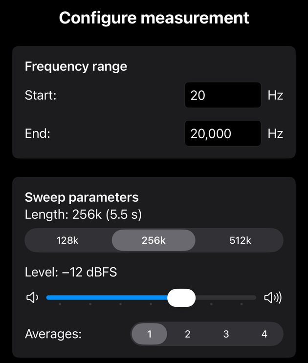
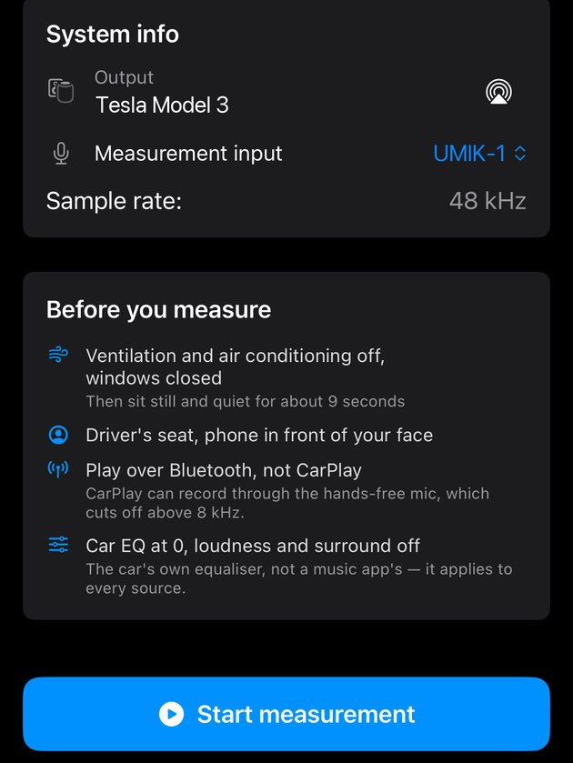
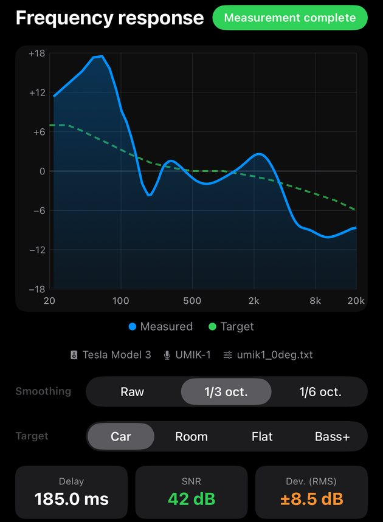
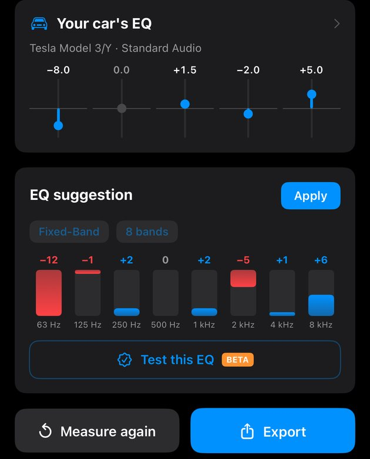
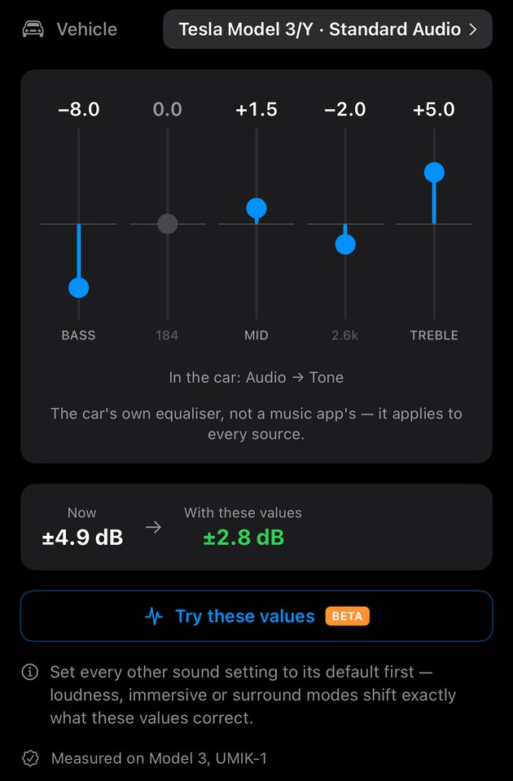
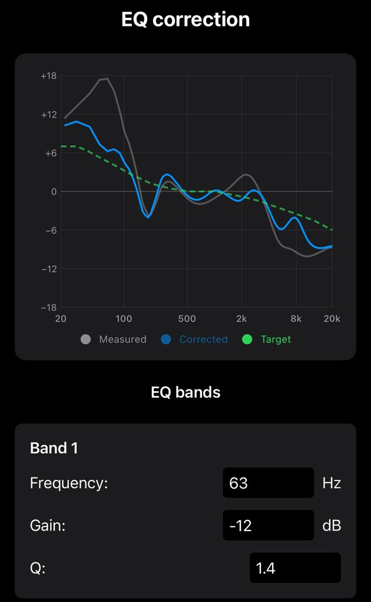
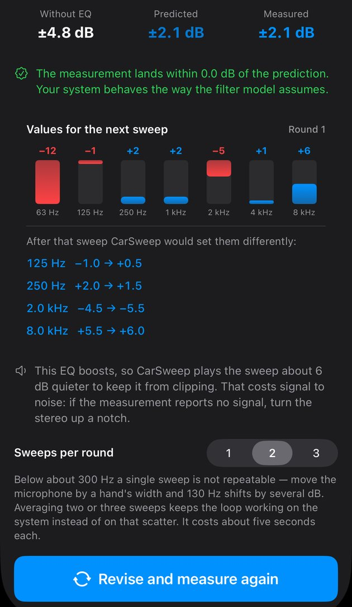
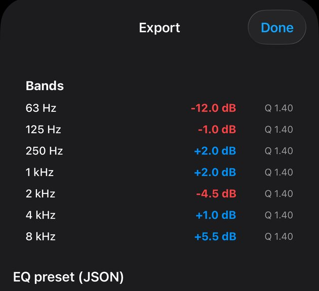
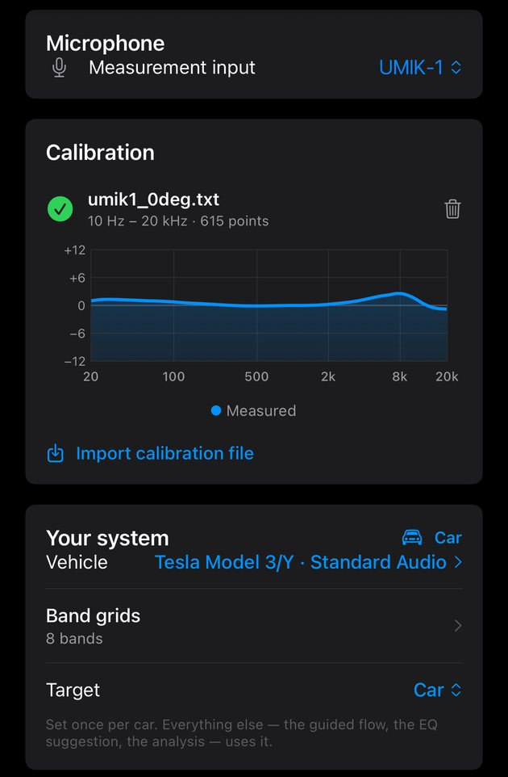

Guides › Expert mode
Expert mode: measure, read and export
Expert mode is the hands-on way through CarSweep. You set up the sweep yourself, see the complete frequency response of your system and get EQ values for whatever equalizer you have: the sliders of your car's own EQ, a fixed-band graphic EQ, or a DSP with parametric bands. If you only want the numbers for your stereo's sliders, EZ Tuning on the start screen is quicker – Expert mode shows you everything behind it.
What you need
- Your phone connected to the car via Bluetooth audio – not CarPlay or Android Auto (they can record through the car's hands-free mic, which is deaf above 8 kHz).
- The car parked, engine and fan off, windows closed. About five minutes.
- Optional: a measurement microphone such as the miniDSP UMIK-1 with its calibration file PRO – see Using a measurement microphone.
Free and Pro. The free version measures from 250 Hz to 10 kHz with the phone's microphone and suggests a 6-band EQ. CarSweep Pro (one-time purchase) adds the full range from 20 Hz to 20 kHz, measurement microphones and calibration files, the parametric EQ and every band grid, the EQ of specific cars and the EQ test. Screenshots are from the iPhone with Pro; the Android app works the same way.

Step 1
Open Expert mode
- 1Car / Room – where you are measuring. Expert mode exists in both; this guide uses Car.
- 2Expert – starts a new measurement.
- 3Settings – measurement microphone, calibration file, your car and the target curve. Worth a look before the first measurement.
- 4Set level – optional, but helpful the first time: plays pink noise so you can find a good volume on the stereo before the sweep.

Step 2
Set up the sweep
The defaults are a good start. Change them only if you have a reason.
- 1Frequency range – start and end of the sweep. Keep 20 – 20,000 Hz to see everything, or narrow it to look at one area. The free version sweeps 250 Hz – 10 kHz automatically.
- 2Length – how long one sweep takes. Longer means more energy per frequency and a cleaner result in a noisy car, especially in the bass. 256k (about 5.5 s) is the default; try 512k if the curve looks ragged.
- 3Level – the digital level of the sweep. Leave it at −12 dBFS and set the loudness with the stereo's volume knob. Lower it only if you hear distortion.
- 4Averages – plays 1 to 4 sweeps in a row and averages them. Two or three smooth out random noise; each one adds a few seconds.

Step 3
Check the connection and start
- 1Output – where the sweep plays. It has to show your car's Bluetooth name. If it says iPhone or Speaker, tap the AirPlay icon and pick the car.
- 2Measurement input – which microphone records. “Automatic” uses a connected measurement mic, otherwise the phone's microphone. PRO for a measurement mic.
- 3Sample rate – for information only; the Bluetooth connection decides it (44.1 or 48 kHz).
- 4Before you measure – the four things that ruin a measurement without showing in the curve: fan on, wrong seat, CarPlay, and the car's own EQ or loudness still switched on. The Bluetooth line turns orange if your sound is on CarPlay.
- 5Start measurement – plays the sweep and records it. Sit in the driver's seat, hold the phone in front of your face and stay quiet until it's done.

Step 4
Read the frequency response
- 1Graph – the blue line is your system as heard at your seat, the dashed green line is the target. Where blue is above green, that range is too loud; below, too quiet. Left is bass (20 Hz), right is treble (20 kHz).
- 2Source – output, microphone and calibration file of this measurement. If you share a screenshot, keep this line in it: it shows at a glance whether the sweep went through the car and the right microphone.
- 3Smoothing – 1/3 octave is closest to what you hear and best for judging. Raw shows every narrow peak and dip; 1/6 is in between.
- 4Target – the sound CarSweep aims for. Car adds the bass lift and gentle treble roll-off most people prefer in a car, Room is for home speakers, Flat is a straight line, Bass+ is flat with a little extra below 100 Hz. Every EQ value follows this choice.
- 5Delay – time from sending the sweep to hearing it, mostly Bluetooth. A few hundred milliseconds is normal. “—” means it couldn't be determined.
- 6SNR – how far the sweep rose above the background noise. Green from 20 dB. Orange: turn the stereo up or make the car quieter and measure again.
- 7Dev. (RMS) – how uneven the curve is, in dB. Smaller is smoother. Handy for comparing two measurements of the same car.
Free version: the hatched areas below 250 Hz and above 10 kHz were not measured. Pro measures the full 20 Hz – 20 kHz.

Step 5
Get EQ values
Scroll down below the graph. There are two kinds of suggestions – use the one that matches your equalizer.
- 1Your car's EQ – values for the sliders of your car's own equalizer, in the order they appear on its screen. Tap for details (step 6).
- 2Apply – opens the suggested bands in an editor where you can fine-tune them (step 7).
- 3Fixed-Band / Parametric – Fixed-Band gives values for a graphic EQ with fixed frequencies, like most head units. Parametric PRO chooses frequency, gain and width freely – for DSPs and PC equalizers.
- 4Band grid – how many bands your EQ has and at which frequencies. 6 bands are free; 7 to 31 bands and your own grids need Pro. Pick the one that matches your head unit.
- 5Bars – one per band: red means cut, blue means boost, the number is dB. A lock means the band lies outside the free range; “–” means this measurement didn't cover it.
- 6Test this EQ PRO – plays the sweep with the suggestion applied and measures what really happens (step 8).
- 7Measure again – back to the setup, for example after you've entered the values in the car.
- 8Export – the bands as a table and as a JSON preset to copy or share (step 9).
CarSweep can't change your stereo. Enter the values in your car's or DSP's equalizer by hand, then measure again to check.

Step 6
Your car's EQ in detail
- 1Vehicle – which equalizer the values are for. Tap to choose: standard Bass/Mid/Treble (free), specific cars like Tesla or VW/Audi PRO, or your own head unit measured with the EQ Designer.
- 2Slider values – laid out like the sliders on your car's screen. Set each slider to the number above it.
- 3Where to find it – the menu path to the EQ in the car. Use the car's own equalizer, not one in a music app: it applies to every source.
- 4Now → With these values – how far the sound is from the target now, and how far it will be with the suggested settings.
- 5Try these values PRO – plays the sweep with these slider settings built into the test signal, so you can see the effect before touching the car.
- 6Profile source – whether the slider data of this car was measured in a real car.

Step 7
Fine-tune the bands
Tap Apply on the EQ suggestion to get here.
- 1Graph – grey is the measurement, blue is the result with these bands, green is the target.
- 2Bands – change frequency, gain or Q of any band. The blue curve follows right away. Q is the width: higher Q, narrower band.
Rule of thumb: cutting peaks is safer than boosting dips. Deep, narrow dips are usually cancellations at the microphone position – boosting them costs headroom and doesn't fix them.

Step 8 · PRO
Test the EQ
Tap Test this EQ, then Measure with this EQ. CarSweep plays the sweep again with the EQ built into the test signal – what comes back is your system with the correction in front of it, measured instead of calculated.
- 1Without EQ · Predicted · Measured – deviation from the target before, as calculated with the EQ, and as actually measured with it.
- 2Verdict – whether measurement and prediction agree. A big gap means your system does something the model doesn't know about: a limiter, a loudness curve, or the phone in a different spot.
- 3Values for the next sweep – the bands that are being tested.
- 4Revisions – what CarSweep would change after this round.
- 5Sweeps per round – two or three averaged sweeps keep the bass stable; below about 300 Hz a single sweep varies a lot.
- 6Revise and measure again – takes the revised values and runs another round. When nothing changes any more, tap Finish – show the values below it; the values land in the EQ suggestion.
Good to know: the test equalizes CarSweep's own test signal, not your music. The values still need to go into your stereo by hand.

Step 9
Export
- 1Bands – frequency, gain and Q of every band, ready to type into an EQ. Below it the same as a JSON preset, with Copy and Share buttons at the bottom.
- 2Done – back to the analysis.
Every measurement is saved. Find it again under All car measurements on the start screen.

Settings · PRO for the microphone
Using a measurement microphone
Open Settings (gear icon on the start screen) and scroll to Microphone. You can also pick the input right in the measurement setup (step 3).
- 1Measurement input – choose your microphone, e.g. UMIK-1, or leave it on Automatic.
- 2Calibration file – the active file has a green check; the graph shows the correction it applies.
- 3Import calibration file – load the .txt file from miniDSP for your microphone's serial number. Use the 0° file if the mic points at the speakers, the 90° file if it points up at the roof.
- 4Vehicle – your car, used for “Your car's EQ” and EZ Tuning.
- 5Band grids – choose or create the band layout of your equalizer.
- 6Target – the target curve for all suggestions. Set it once per car.
Connecting a UMIK-1: on a USB-C iPhone plug it in directly. On a Lightning iPhone use Apple's Lightning to USB Camera Adapter – a plain USB-C to Lightning cable may not power the microphone.
Troubleshooting
- “No signal detected”
- The sweep didn't reach the microphone loud enough. Check that the output shows your car, turn the stereo up a few steps and measure again.
- The sound comes out of the phone
- The output shows iPhone or Speaker. Tap the AirPlay icon in the setup and pick your car's Bluetooth.
- The curve drops off a cliff around 8 kHz
- The recording went through the car's hands-free microphone, usually because CarPlay or Android Auto is connected. Switch the stereo to Bluetooth audio and measure again – the source line under the graph shows which microphone was used.
- SNR is orange
- The sweep wasn't loud enough compared to the noise in the car. Turn the volume up, switch off the fan, close the windows, or use a longer sweep and 2 – 3 averages.
- Two measurements in a row look different in the bass
- Below about 300 Hz, moving the phone by a hand's width changes the curve by several dB. Keep the phone in the same place, use 2 – 3 averages, and judge with 1/3-octave smoothing.
- “The recording ended before the sweep finished”
- The Bluetooth delay was longer than the recording reserve, so the top of the range is missing. Measure again; if it keeps happening, the connection is unusually slow.
Still stuck? Write to help@carsweep.app – a screenshot of the analysis with the source line helps a lot.